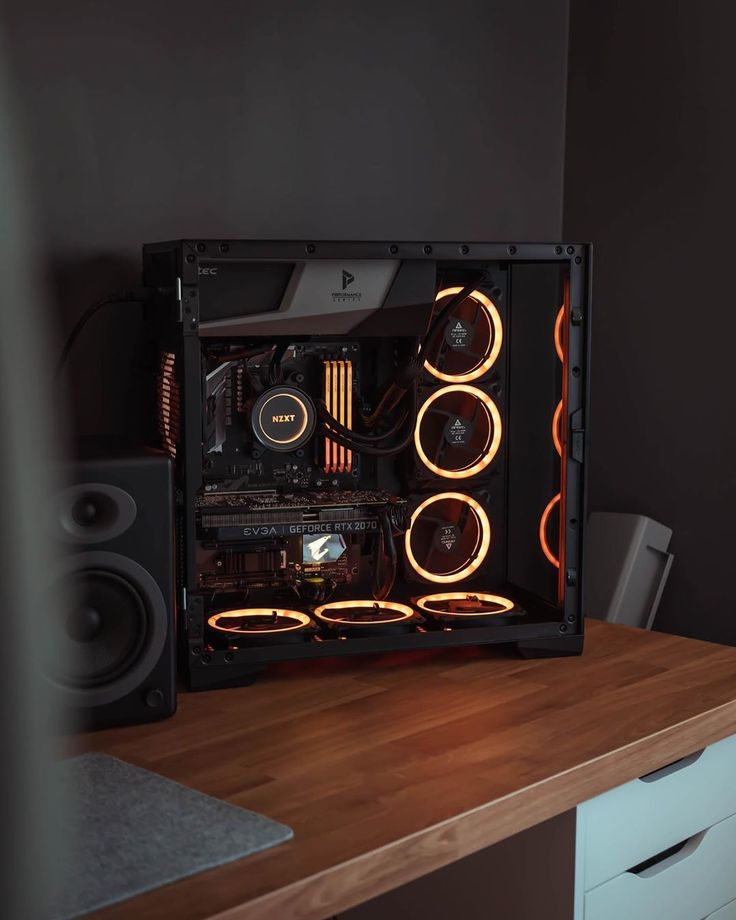
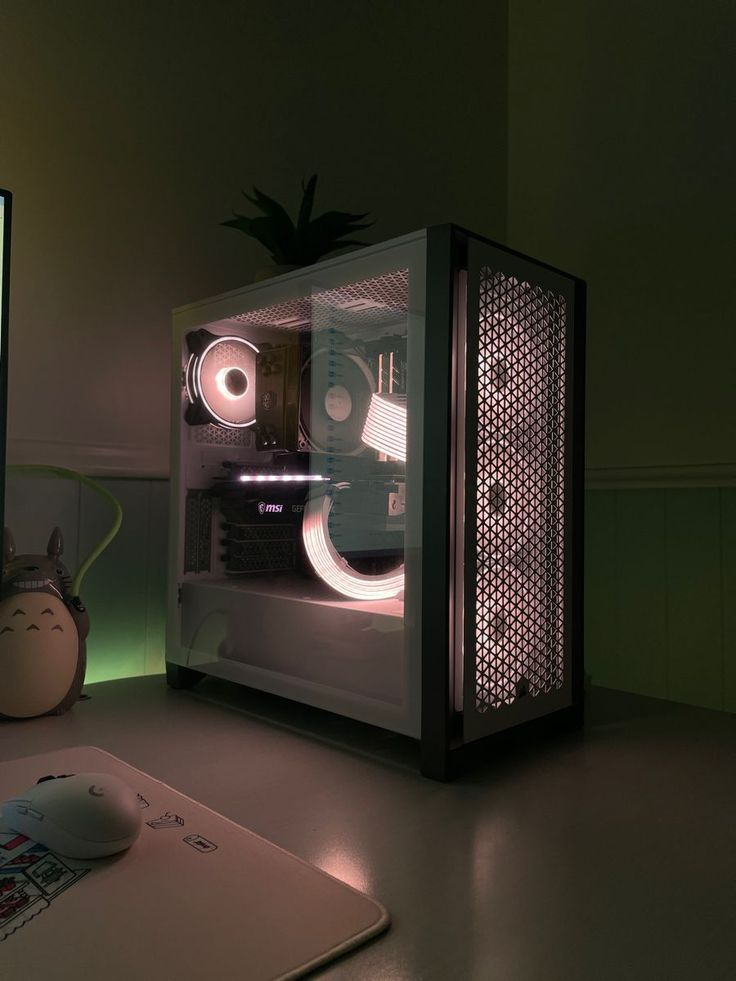

The Features:
- EVGA GeForce RTX 2070 graphics card with RGB lighting
- A set of RGB LED fans providing cooling for the system
- A motherboard with a CPU socket and other connectors
- Various cables and components neatly organized within the case

The Features:
- Transparent side panel that allows a clear view of the internal components
- RGB lighting elements that create a vibrant and atmospheric lighting effect
- A decorative plant placed on top of the case, adding a touch of nature
- Various gaming peripherals like a mouse and keyboard visible in the foreground

The Features
- A transparent tempered glass side panel that allows a clear view of the internal components
- Vibrant blue and white RGB lighting that creates a mesmerizing and atmospheric visual effect
- The use of a Corsair liquid cooling system, with its distinctive blue pump and radiator visible
- Various other high-end PC components, such as a graphics card and motherboard, showcased within the glass enclosure
- The overall case design features a sleek, angular, and modern aesthetic, with a distinctive honeycomb-patterned front panel

The Features:
- A tempered glass side panel that provides a clear view of the internal components
- Extensive use of RGB lighting, with various components illuminated in vibrant purple and blue hues
- A prominent CPU cooler, likely a high-performance liquid cooling system, prominently displayed
- Various other high-end PC components such as the motherboard, graphics card, and storage drives neatly arranged within the case
- The overall case design features a sleek, angular, and modern aesthetic, with a distinctive front panel design